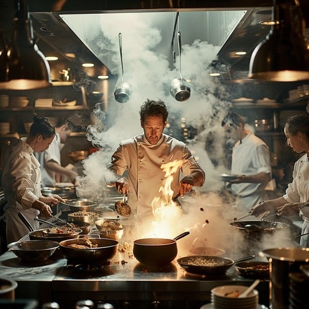
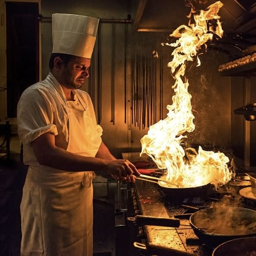

Our Story

Céto was born out of a longing — a longing to do something rare: to craft a fine-dining seafood experience that embraced the values of halal integrity without compromising on elegance or innovation. Our journey began with Chef Zakir — a visionary who learned to cook by firelight on the beaches of Cape Town and went on to study under European masters who shaped his understanding of culinary storytelling.
His mission was clear from the start: create a space that honours the ocean's bounty while respecting cultural boundaries and spiritual values. It took months of coastal scouting to find ethical, sustainable suppliers. It took years to perfect the balance of spices and seafoam. And it took unshakable belief to build a team that shares this vision.
From the raw slate of a shellfish to the softness of a poached pear, every element at Céto is intentional. Behind the scenes, our kitchen is a symphony — sharpened knives, focused eyes, and boundless pride. And at the centre, always, is Chef Zakir — not just cooking, but composing. For him, food is memory. Food is prayer. Food is poetry.
But Zakir's journey wasn't always lined with copper pans and accolades. Raised in a modest household where hospitality meant giving your best, even when you had little, he first saw food as a gift — a way to honour guests, nourish community, and share culture. His earliest mentors weren't chefs in tall hats, but his mother and grandmother, whose intuitive sense of flavour and generosity became his compass.
Today, he carries those lessons into every dish. At Céto, he insists on excellence not for prestige, but as an act of gratitude — to the ocean, to his team, and to every diner who walks through our doors.

Chef Amina brings a graceful confidence to the Céto kitchen. Trained in Lyon, tempered in Durban, she blends classical technique with instinctive soul. Amina's journey has always been grounded in the art of fusion — the way cumin can dance with citrus, or how a seared scallop can hum with preserved lemon. Her dishes reflect restraint and elegance, often inspired by memory, tradition, and the rhythm of the seasons.
What drew her to Céto was more than cuisine. It was purpose. In her, we found a guardian of quality, a quiet leader, and a mentor who teaches by example, not ego. She believes that a dish only shines when the team behind it is in sync — and her calm under pressure has become the pulse of the kitchen.
Her culinary philosophy is deeply personal: food should nourish more than the body — it should feed the soul. At Céto, she's not just a chef. She's an anchor. Her palate is precise, her plating poetic, and her leadership grounded in grace.

Young, fiery, and wildly gifted, Chef Yusuf is Céto's rising star. His story begins in the Cape Flats, where he watched his grandmother turn simple ingredients into rituals of love. Drawn to the kitchen from a young age, Yusuf turned his curiosity into craft, absorbing every lesson he could — from neighborhood kitchens to international pastry courses he found online and funded himself.
His journey wasn't easy. He worked his way up from dishwasher to prep cook, arriving early and leaving late, determined to master each station. His work ethic caught the attention of Chef Zakir, who offered him an apprenticeship that would evolve into something greater. Now, Yusuf is Céto's master of desserts and fine finishes.
But Yusuf brings more than technique. He brings hunger — not just for excellence, but for expression. Every plate he creates is a tribute to resilience, to where he comes from, and to the legacy he's building. His energy lifts the entire brigade, and his creativity ensures that every guest leaves with a sweet memory — and a sense of wonder.